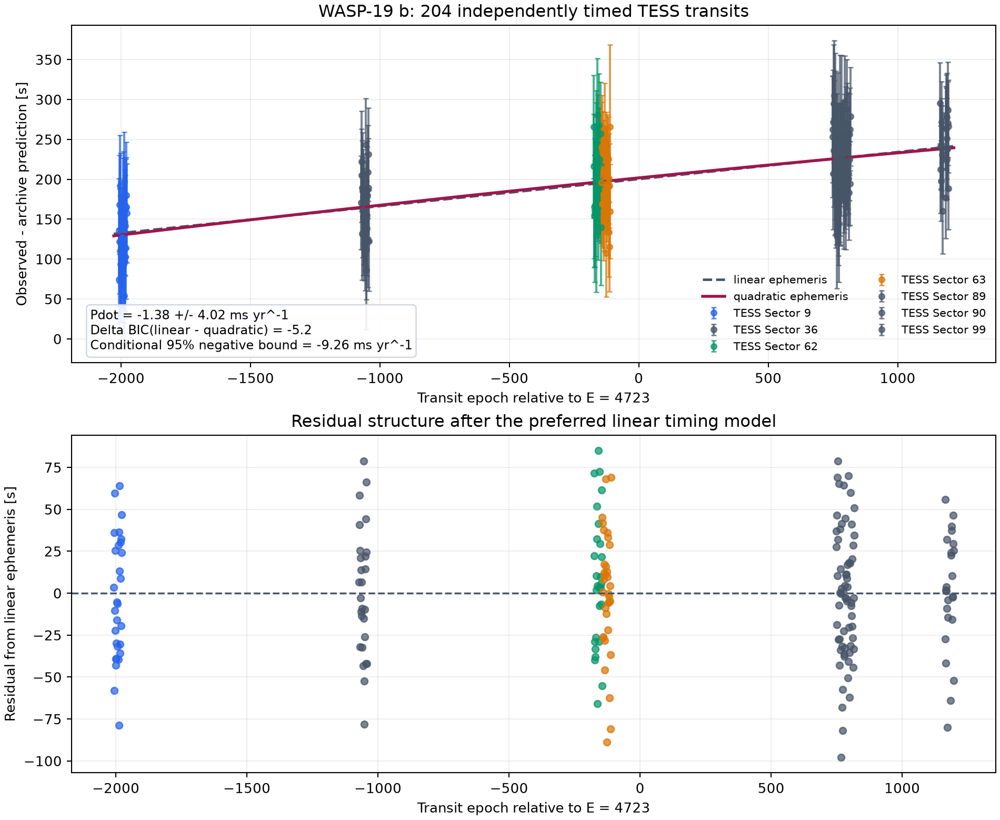
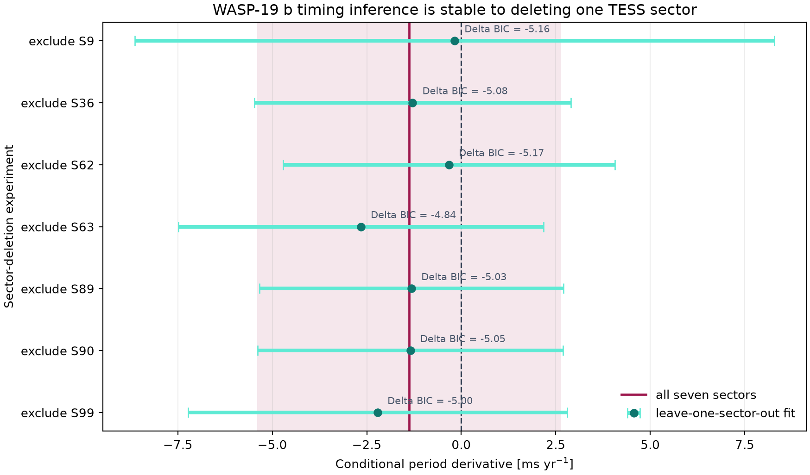
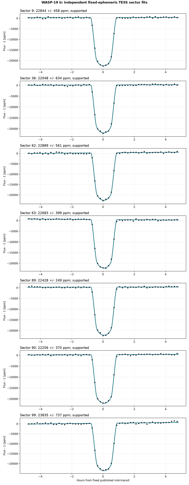
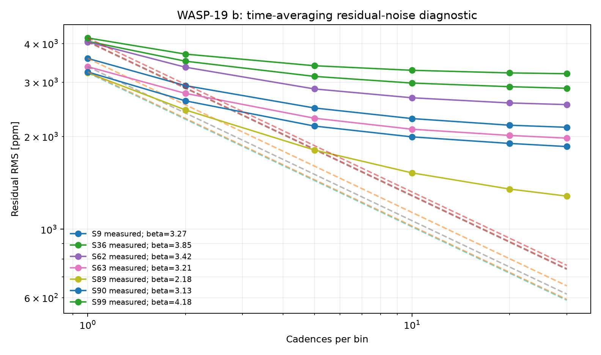
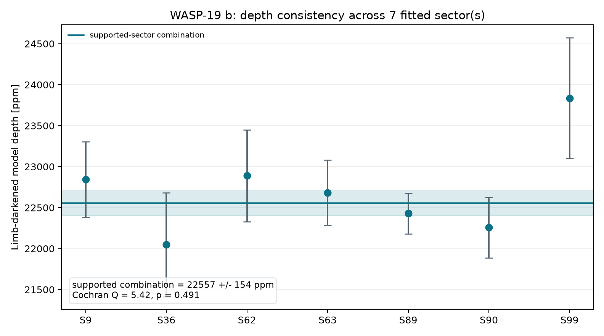

Homogeneous input
Seven target-specific, 120-second SPOC light curves are kept unmodified. Mixed-cadence and FFI products are excluded to avoid duplicate or heterogeneous measurements.
Seven-sector TESS timing study · 2026
A reproducible transit and ephemeris analysis built from seven unmodified TESS SPOC light curves. The purpose is not to announce orbital decay, but to measure what TESS alone can—and cannot—resolve.
The seven-sector dataset independently times 204 transits across 2,528 days. A quadratic ephemeris gives a conditional period derivative of −1.38 ± 4.02 ms yr⁻¹, but its additional curvature parameter is not justified by the likelihood gain: ΔBIC(linear − quadratic) = −5.20.
Under the stated Gaussian and equilibrium-tide assumptions, the 95% negative bound is Ṗ > −9.26 ms yr⁻¹, corresponding to Q′★ > 3.0 × 105. This is a sensitivity limit—not a tidal-decay detection.

Seven leave-one-sector-out refits probe sensitivity to individual observing campaigns. Every deletion prefers the linear model: ΔBIC ranges from −4.84 to −5.17, while Ṗ ranges from −2.66 to −0.17 ms yr⁻¹. This test addresses sector leverage; it does not capture every shared systematic.

Seven target-specific, 120-second SPOC light curves are kept unmodified. Mixed-cadence and FFI products are excluded to avoid duplicate or heterogeneous measurements.
Each sector receives a bounded circular, quadratic-limb-darkened fit with timing freedom and a local baseline. Residual time-averaging beta inflates formal errors.
The sector shape is fixed while midpoint, intercept, and slope are fitted for every transit. Empirical sector jitter prevents a few formally precise events from dominating.
Conditioned weighted least squares compares linear and quadratic O−C models. BIC penalizes the quadratic model's extra coefficient.
Both ephemerides are refitted seven times, omitting one sector per run. The full inference is retained alongside the deletion ensemble.
SHA-256 tests verify every FITS file. Regression tests rerun the real-data analysis and require all declared figures and tables.



WASP-19 b illustrates why cross-instrument reproducibility and stellar activity matter. The studies below use different instruments, epochs, wavelength ranges, reduction choices, and model spaces. Broadband TESS photometry cannot adjudicate molecular abundances, so this repository does not turn those claims into a new retrieval.
| Study | Reported result | Interpretive scope |
|---|---|---|
| Huitson et al. (2013) | H₂O at 4σ; low or absent TiO | HST optical-to-near-IR transmission spectrum; active-star treatment is central. |
| Sedaghati et al. (2017) | TiO, haze, Na and H₂O reported | Combined VLT/FORS2 and HST evidence; historically influential but not reproduced uniformly. |
| Espinoza et al. (2019) | Featureless optical spectrum; subsolar TiO/Na | Magellan/IMACS analysis and joint interpretation that challenges a simple strong-TiO account. |
| ESPRESSO study (2021) | TiO constrained to roughly 100× subsolar; blue scattering retained | High-resolution optical evidence with a different sensitivity and model space. |
Seven target-specific TESS SPOC light curves are stored as received. Exact archive identifiers, retrieval date, product-selection rule, and SHA-256 digests are recorded in data/SOURCE.md. System values come from the committed NASA Exoplanet Archive row.
Individual transit timings, ephemeris statistics, sector-deletion results, and per-sector transit fits are published beside the figures.
pip install -r requirements.txt python scripts/analyze_transit.py python scripts/analyze_multisector.py python scripts/analyze_timing_limits.py pytest tests/ -v